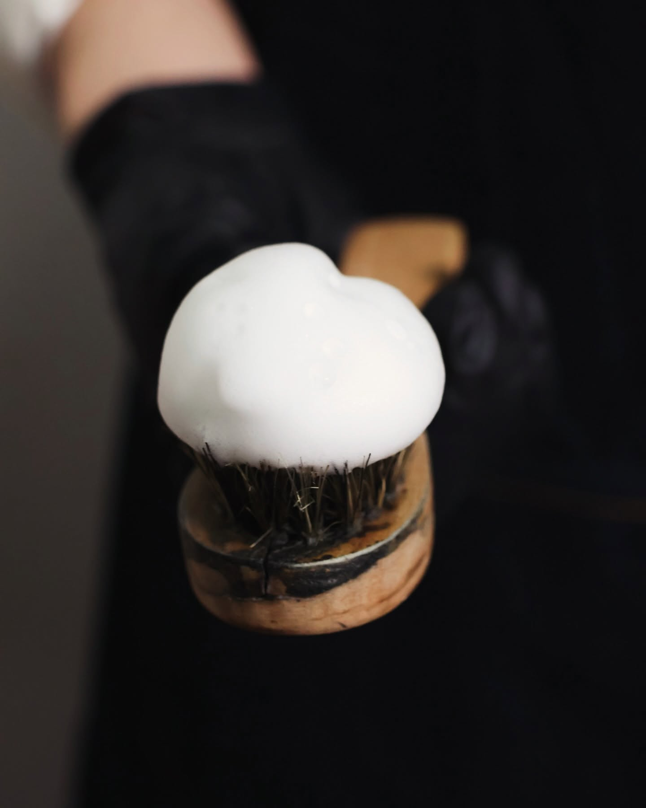

品牌故事
辰清潔
辰清潔
LifeCare
全台平價優質鞋包衣護理連鎖品牌。2015 年從 5 坪小套房、1 張洗鞋訂單白手起家，如今全台發展出 8 個連鎖據點。我們不走昂貴高冷的奢侈路線，只專注用最透明合理的價格，為大眾提供最扎實、高 CP 值的日常護理服務。

LifeCare ・ 門市實景
全台平價優質鞋包衣護理連鎖品牌。2015 年從 5 坪小套房、1 張洗鞋訂單白手起家，如今全台發展出 8 個連鎖據點。我們不走昂貴高冷的奢侈路線，只專注用最透明合理的價格，為大眾提供最扎實、高 CP 值的日常護理服務。
提供日常球鞋、工作皮鞋與各類大眾鞋款的深層去漬與除霉養護。誠實對待每雙陪伴你走路的鞋，用平價合理的預算還原乾淨狀態。
針對日常愛包、後背包、帆布包與皮革包款進行專業洗滌與色澤修復。解決日常摩擦產生的污損與褪色，回到值得天天帶出門的日常。
機能外套、日常衣物的深層去污與纖維保養，拒絕化學成分殘留。不搞玄妙的洗滌術語，用最扎實的基本功還原衣服的舒適體感。

從第 1 筆訂單到現在，辰清潔在全台累積突破 14,000+ 筆門市服務訂單，並贏得 6,500+ 位品牌會員的長期信任。我們不講高深的商業噱頭，只用公開透明的價格與標準化的基本功，成為大眾日常洗護最安心的依賴。
核心直營示範門市，提供最完整的鞋、包、衣高規格標準洗護示範。
涵蓋工學、大雅、后里、沙鹿、軍福、大墩，社區型平價日常洗護據點。
包含新竹竹東工作室、台南新建工作室，將標準化平價洗護輸出外縣市。
拒絕暴利抽成，誠實交付 11 年門市生存基本功，歡迎加入實戰行列。
＊實際門市地址與營業時間，歡迎透過聯絡方式或品牌社群查詢最新資訊。